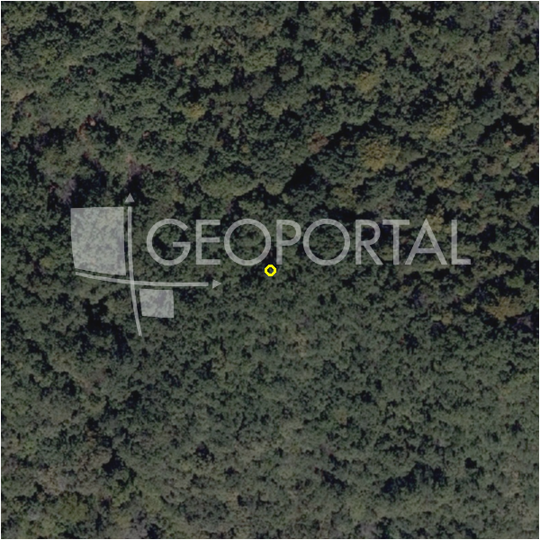

#4834 · Građevinsko zemljište Markuševec 1052 m2
Markuševec, Podsljeme, Grad Zagreb · zemljiste · njuskalo · status active · oglas ↗
Ocjena
- Score
- 61 rule 61 · LLM – · 11.09.2026.
- RLV
- 292.000 € (278 €/m²) · ratio 4,87
- Ukupna investicija
- 2,47 M€
- GBP
- 1.262 m²
- Feedback
- –
- CRM
- –
Oglas
- Cijena
- 60.000 € (57 €/m²)
- Površina
- 1.052 m²
- Prodavatelj
- agencija · RE/MAX Solutions
- Prvi put
- 11.09.2026. · zadnje 11.09.2026. · 0 d na tržištu
Povijest cijene
| Datum | Cijena |
|---|---|
| 11.09.2026. | 60.000 € |
Flagovi
zone_uncertainty zona nije pregledana (reviewed: false) (−5)bez_gis bez GIS obogaćivanja (M1)
zona_iz_oglasa zona preuzeta iz teksta oglasa (bez GIS-a)
llm_pending LLM ekstrakcija/ocjena nedostupna
Komponente score-a
| rlv | {'gbp': 1262.3999999999999, 'kis': 1.2, 'nkp': 984.6719999999999, 'noi': None, 'rlv': 292094.11199999996, 'ratio': 4.868235199999999, 'value': None, 'phases': 1, 'profile': 'zagreb_visestambeno', 'gdv_neto': 3387271.6799999997, 'cost_soft': 257529.59999999998, 'gdv_bruto': 4234089.6, 'kis_known': False, 'total_inv': 2465409.6, 'cost_build': 2146080.0, 'cost_sales': 127022.68799999998, 'demolition': False, 'gbp_source': 'kis', 'rlv_per_m2': 277.65599999999995, 'parcel_area': 1052.0, 'parcelation': False, 'cost_demolition': 0.0, 'total_inv_phase': 2465409.6, 'parcel_area_effective': 1052.0, 'sale_price_per_m2_nkp': 4300.0} |
| hard | [] |
| info | ['bez_gis', 'zona_iz_oglasa', 'llm_pending'] |
| rubric | {'permits': {'max': 10.0, 'detail': {'permit': 'none'}, 'points': 0.0}, 'physical': {'max': 10.0, 'detail': {'reason': 'bez GIS-a'}, 'points': 4.0}, 'liquidity': {'max': 10.0, 'detail': {'n_cuts': 0, 'points_cut': 0.0, 'points_days': 0.0, 'seller_type': 'agencija', 'points_fresh': 1.0, 'price_cut_pct': None, 'days_on_market': 0, 'points_private': 0}, 'points': 1.0}, 'rlv_ratio': {'max': 40.0, 'detail': {'rlv': 292094, 'ratio': 4.868, 'asking_price': 60000.0}, 'points': 40.0}, 'zone_quality': {'max': 15.0, 'detail': {'source': 'oglas', 'zone_class': 'mjesovito_pretezito_stambeno', 'zone_ideal': True}, 'points': 6.0}, 'price_vs_benchmark': {'max': 15.0, 'detail': {'source': 'auto:Podsljeme', 'deviation': 0.432, 'ask_eur_m2': 57, 'benchmark_eur_m2': 100.45}, 'points': 15.0}} |
| weights | {'llm': 0.4, 'rule': 0.6, 'model': 0.0} |
| penalties | {'zone_uncertainty': 5} |
| raw_score | 66,0 |
| rlv_notes | [] |
| flag_notes | {'total_inv': 2465410, 'zone_code': 'M', 'zone_class': 'mjesovito_pretezito_stambeno', 'zone_source': 'oglas', 'zone_reviewed': None} |
| caps_applied | [] |
GIS
- Čestica
- –
- Zona
- M (–) · NIJE pregledana
- kig / kis / katnost
- – / – / –
- GP / UPU
- – · UPU ne
- Pristup / nagib
- – · – % (max – %)
- More
- – m · red – · ZOP –
- Zaštite
- Natura ne · zaštićeno ne · kulturno dobro ne
- Zgrade na čestici
- –
- Match
- –
Karta
Ortofoto (DOF)

RLV kalkulacija — pretpostavke
| gbp | {'value': 1262.3999999999999, 'source': 'kis'} |
| kis | {'value': 1.2, 'source': 'default_profila'} |
| soft_pct | {'value': 0.12, 'source': 'profil'} |
| nkp_ratio | {'value': 0.78, 'source': 'profil'} |
| parcel_area | {'value': 1052.0, 'source': 'oglas'} |
| asking_price | {'value': 60000.0, 'source': 'oglas'} |
| transfer_tax | {'value': 0.03, 'source': 'profil'} |
| margin_on_cost | {'value': 0.2, 'source': 'profil'} |
| build_cost_per_m2_gbp | {'value': 1700.0, 'source': 'profil'} |
| sale_price_per_m2_nkp | {'value': 4300.0, 'source': 'benchmark:seed:Podsljeme'} |
Ekstrakcija iz oglasa
| zone_claim | M |
| parcel_count | 1 |
Opis oglasa
Prodajemo građevinsko zemljište veličine 1052m2 u podsljemenskom naselju Markuševec. Zemljište je pravilnoga oblika te je smješteno uz prometnicu, sva komunalna infrastruktura je prisutna. STAMBENA I MJEŠOVITA NAMJENA Tip gradnje: slobodnostojeće građevine Minimalna površina čestice: 800 m² Maksimalna izgrađenost čestice: 20% (208 m²) Maksimalni GBP prema PP: 365 m² Maksimalni Kisn: 0,5 Minimalni prirodni teren: 60% (ne unutar rezervacije proširenja postojeće ulice) (625 m²) Maksimalna visina/katnost: 2 nadzemne etaže Vrste etaža: Pr/S+1+Pk/Uk Minimalni broj PGM: 2 PGM / 1 stan (minimalno 50% u garaži, planirati na čestici i ne unutar rezervacije proširenja postojeće ulice) Minimalna udaljenost od susjedne čestice: 3 m Minimalna udaljenost od regulacijskog pravca: 5 m (ili od rezervacije za proširenje prometnice, iznimno manje ako je u skladu s pravcem postojećih građevina) Maksimalni broj samostalnih uporabnih jedinica: 3 Detaljnu analizu šaljemo na upit. Za više informacija i dogovor oko razgleda slobodno nas kontaktirajte. Kristijan Cerovec - agent sa licencom +385 91 3721877 RE/MAX Solutions